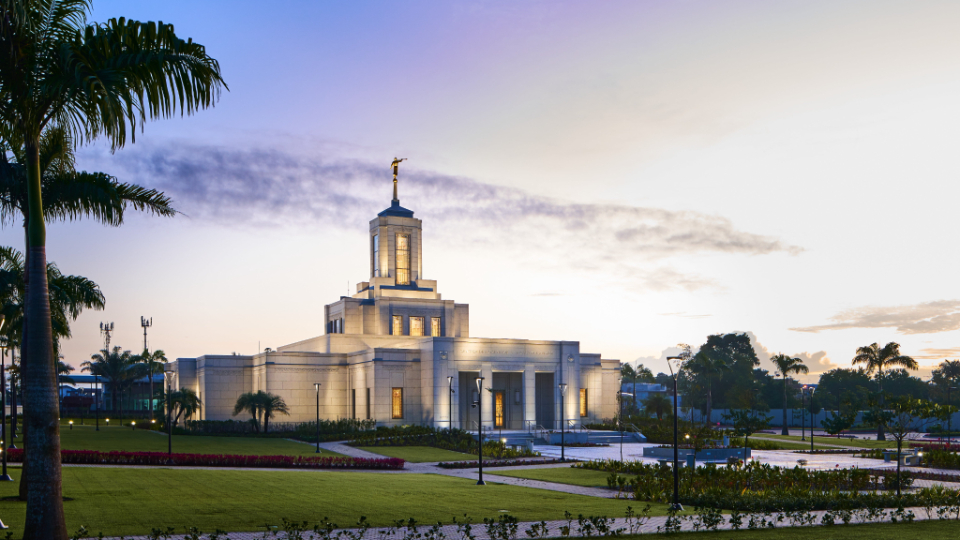
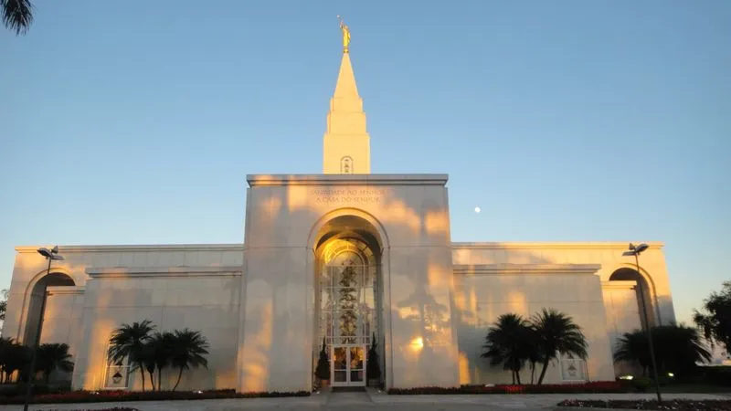
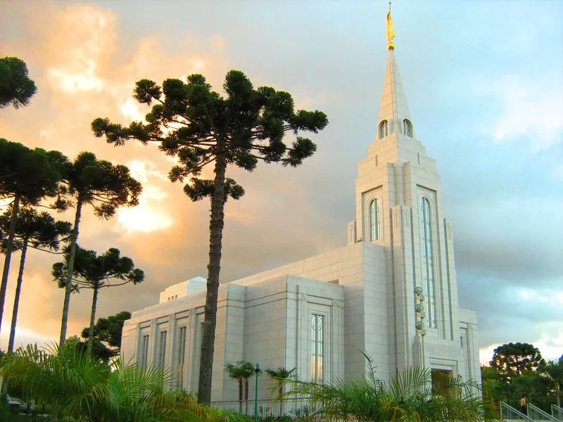
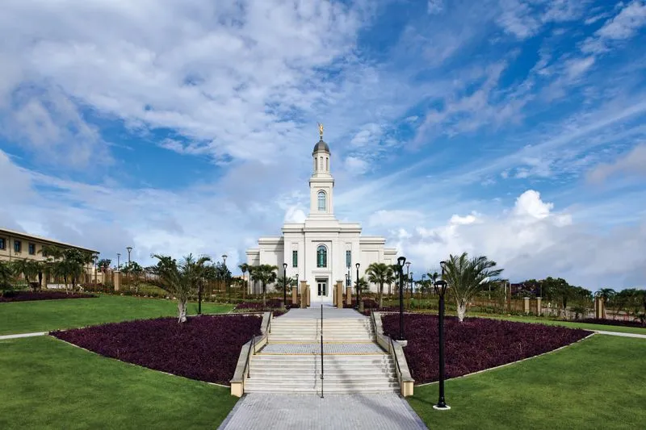
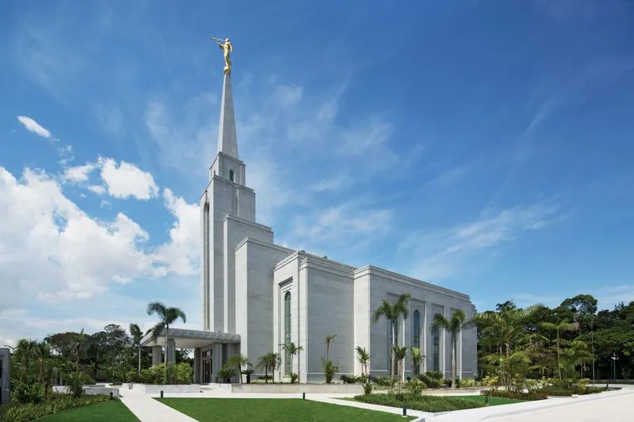
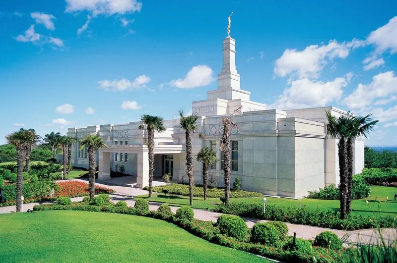
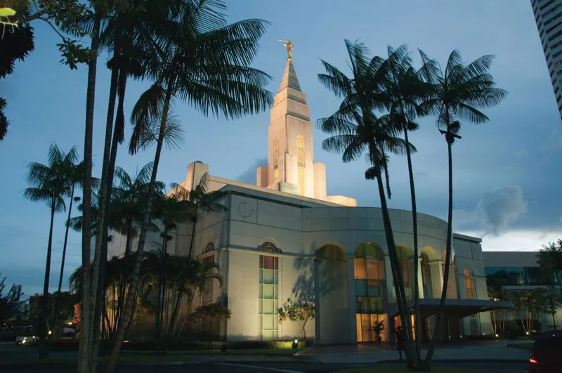
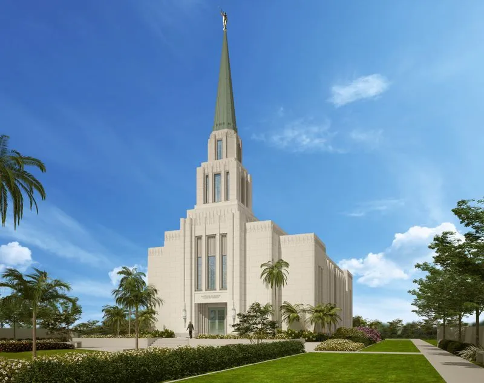
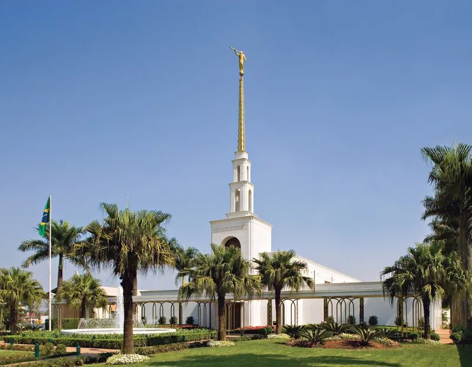

Temple Album
☰
Home
Old
New
Large
Small
Home

Belem Brazil Temple

Campinas Brazil Temple

Curitiba Brazil Temple

Fortaleza Brazil Temple

Manaus Brazil Temple

Porto Alegre Brazil Temple

Recife Brazil Temple

Rio de Janeiro Brazil Temple

São Paulo Brazil Temple